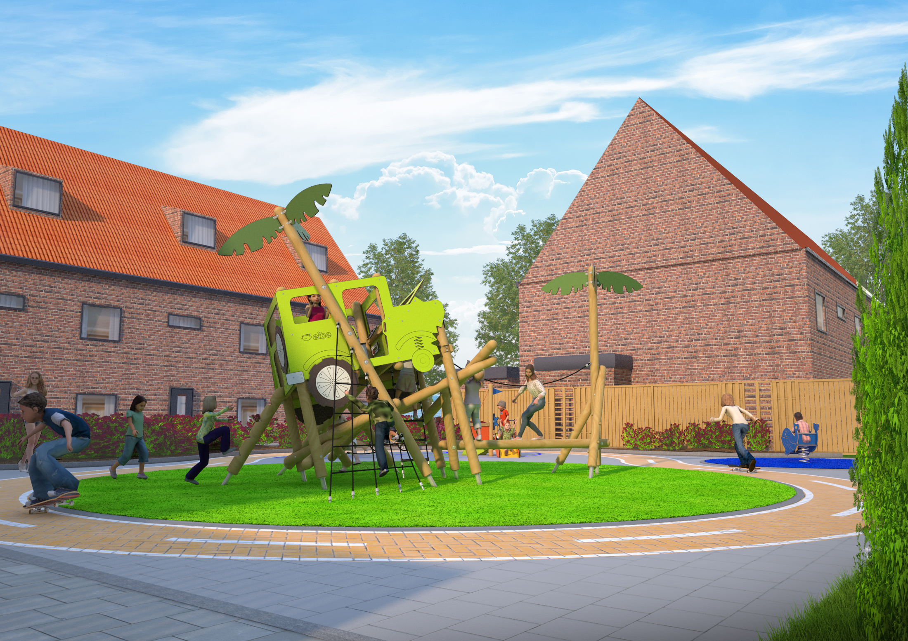
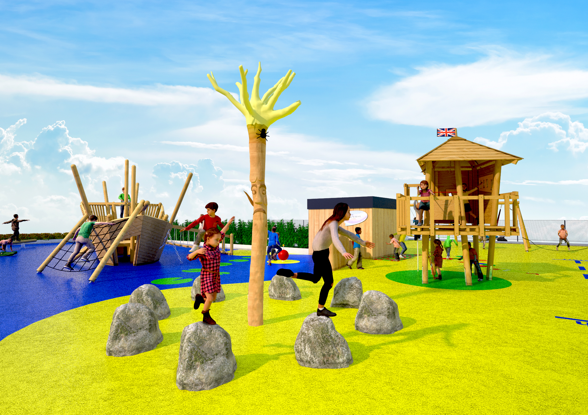
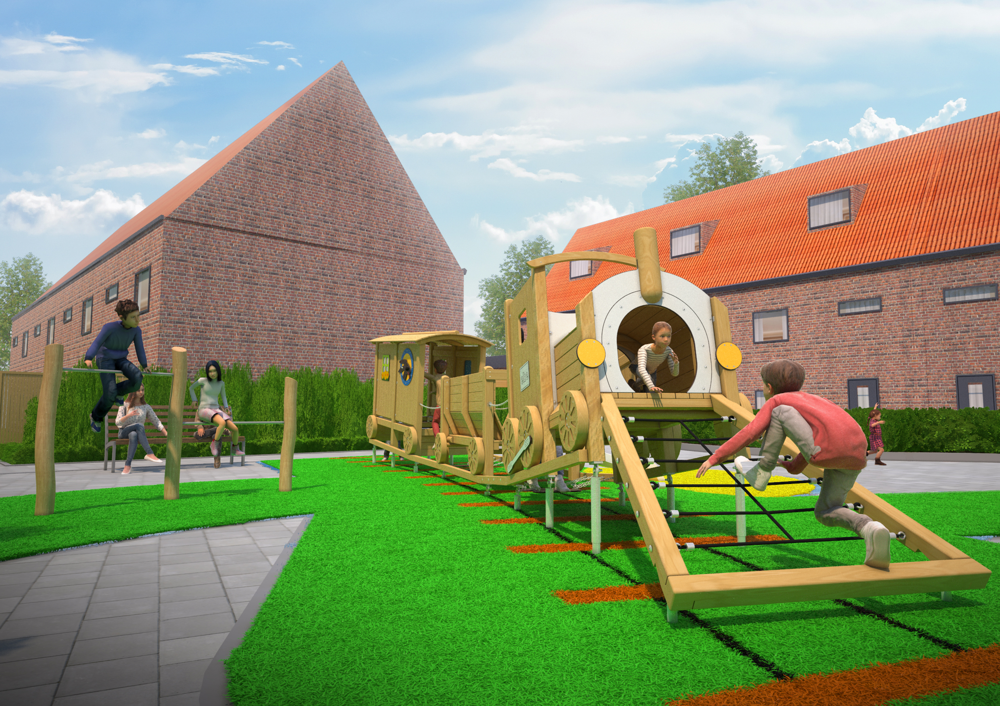
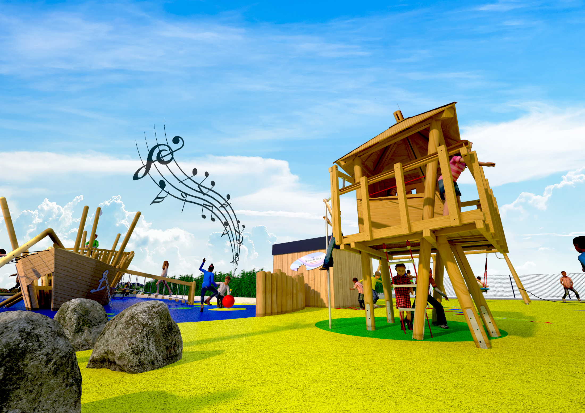
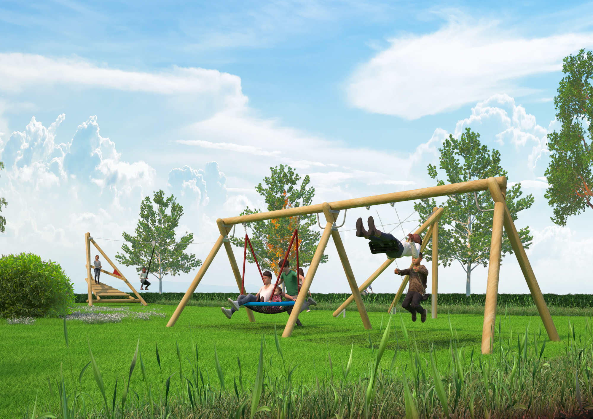

Mijn naam is Vince ’t Hoen, geboren in 1992. Woonachtig in Honselersdijk met mijn vrouw en dochter. Ik heb een grote passie voor vormgeven, ontwerpen en creëren. Verder ben ik een echte Westlander die niet houd van stil zitten. In mijn vrije tijd ben ik vaak te vinden achter mijn computer of in mijn schuur. Waar ik mij bezig houd met het opknappen van een old timer, projecten uitwerk met mijn 3D printer of het maken van mijn eigen (VR) games op de computer.
Momenteel werk ik voor het bedrijf Eibe Benelux waar ik ondersteun in:
Verder heb ik met veel verschillende soorten 3D software gewerkt zoals; 3Dsmax, Vray, Maya, Autocad, substance painter, Sketchup, Mudbox en Blender. Mijn voorkeur gaat uit naar Blender, omdat dit gratis open source software is, Meest innoverend en simpel weg de beste van alle. 6 jaar geleden ben ik mij ook gaan verdiepen in de wereld van VR. En ben ik toen een eigen onderneming gestart door middel van het maken van VR ervaringen. Hierdoor heb ik mijzelf geleerd te programmeren met C# in de Unity game engine.